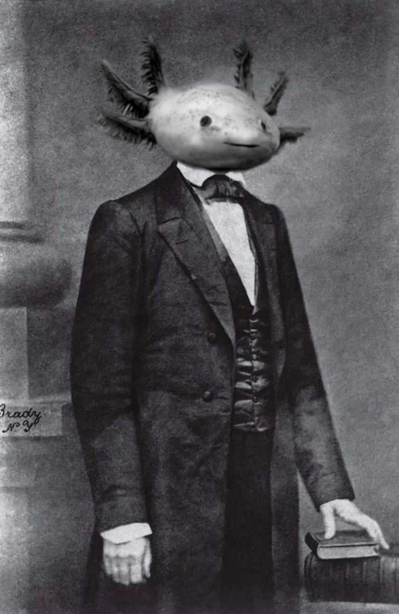
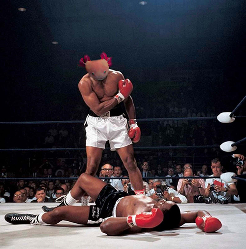
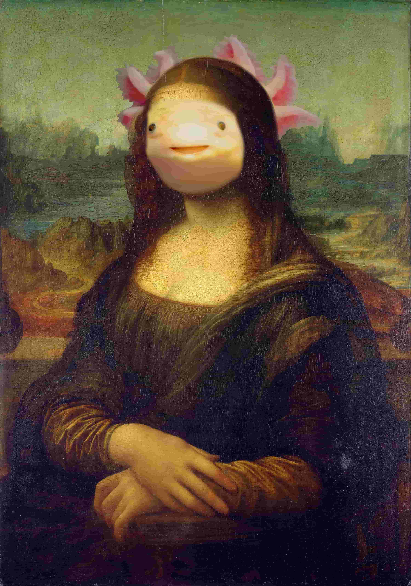
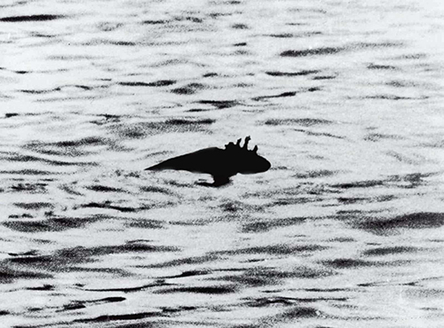
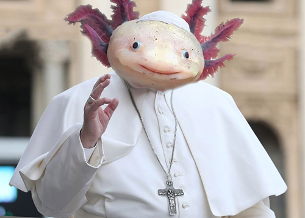
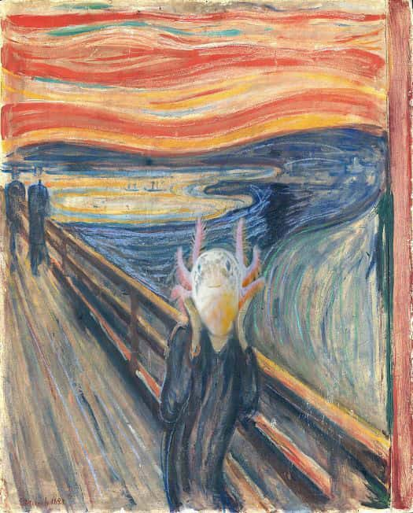

PERSONAGGI FAMOSI
Abrahalotl Axolincoln
Nato nel 1809, Abrahalotl Axolincoln divenne il primo presidente salamandra della storia.
Torna suMohamedlotl Alitl
Uno dei migliori pugili della storia, Mohamedlotl Alitl sfruttò la sua tenerezza per sconfiggere tutti gli avversari.
Torna suLa Giocondotl
La Giocondotl cela molti segreti al suo interno. Come fa a seguirti con lo sguardo? E quel sorriso criptico cosa nasconde? Lo scopriremo dopo la pubblicità.
Torna suIl mostro di Lotlness
Avvistato per la prima volta nel 1680 avanti Axolotl divenne subito leggenda. Molti studiosi dicono che un lago così piccolo non potrebbe mai contenere cotanta tenerezza.
Torna suPapaxlotl
Nella lista delle salamandre famose non poteva mancare lui. Il santo pontefice. Habemus Papaxlotl
Torna suIl primo selfixlotl

Pensavate veramente che non ci fossero gli animali più carini del mondo dietro all'autoscatto più famoso della storia? Vi sbagliavate.
Torna suUrlotl
Persone da tutto il mondo compiono centinaia di migliaia di kilometri per ammirare questo fantastico capolavoro: l'Urlotl.